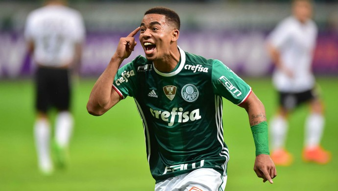
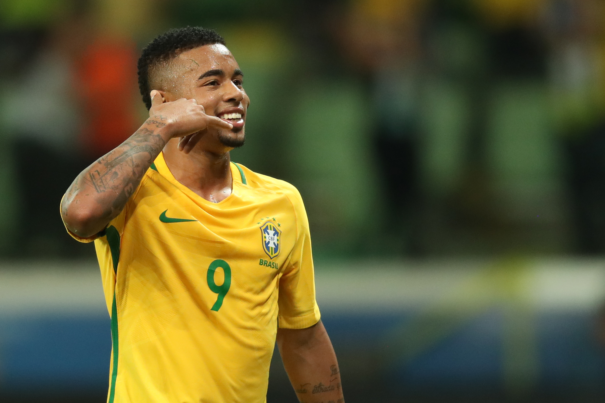

Gabriel Fernando De Jesus, mais conhecido como Gabriel Jesus, Nascido em 03/04/1997 em São Paulo - Brasil, Gabriel veio de uma família pobre com dois irmãos (Felipe e Caíque) uma irmã (Emanuelle) e sua mãe (Vera Lúcia) que os criou e educou sozinha.

Nos anos 2000,3 anos de idade tinha Gabriel que se mudou para o Jardim Peri e foi por lá onde tudo começou, Gabriel era um garoto simples e normal que gostava de jogar futebol na rua com seus amigos, em 2005, Gabriel com apenas 8 anos foi jogar na escolinha de bairro onde morava, em um campo de terra, e desde de muito cedo mostrava muito talento no que fazia, até seus 15 anos ele já tinha por vários times, como por exemplo, no "Pequeninos do Meio Ambiente", "União Peri", "Canjareira", "Vitória do Peri" e por último na associação "Anhanguera", Em 2012 no Anhanguera, na Copa São Paulo Sub-15 ele marcou 29 gols e terminando a copa como Artilheiro, este desempenho chamou atenção do Time Palmeiras que o contratou em 2013, quando tinha 16 anos.
Pelo Palmeiras, no Campeonato Paulista Sub-17 ele não foi titular, mas não demorou muito e logo a titularidade veio, e assim, ele terminou aquela competição como Artilheiro novamente, só que desta vez do Time com 16 gols. Neste mesmo ano ele conquistou a Copa Internacional de Arapongas (Sub-17), sendo Artilheiro com 8 gols e sendo eleito como o Melhor Jogador. Em 2014, com 17 anos ele conquistou pelo o Palmeiras outro título Internacional, Campeão Aspires Tri-Series do Catar (Sub-17), sendo novamente o Artilheiro e Melhor Jogador daquela competição, depois disso ele jogou o Campeonato Paulista Sub-17 e apesar do Palmeiras ter perdido na final, o desempenho de Gabriel foi incrível, em 22 partidas conseguiu fazer 37 gols, terminando como Artilheiro e Melhor Jogador.

Em 2015, com 17 anos e pela Copa São Paulo Futebol Junior, em 6 jogos fez 5 gols e foi um dos destaques daquela competição, com isto, depois da Copinha, finalmente foi promovido pelo Técnico Osvaldo de Oliveira como jogador profissional, Sua estreia foi no dia 07 de Março de 2015, contra o Bragantino, Seu primeiro aconteceu em 15 de Julho, pelas Oitavas de Finais da Copa do Brasil, contra o ASA de Alagoas, O Palmeiras conseguiu ser Campeão da Copa do Brasil sendo esse o primeiro título profissional em sua carreira. No meio de 2016 ele foi para as Olímpiadas com o Brasil e foi um grande destaque, conseguindo ser Campeão e fazendo o Brasil olhar cada vez mais para o seu talento, até que um dia ele foi telefonado por Pep Guardiola, ele foi selecionado e convocado para ir jogar no Manchester City, sendo comprado por 127 milhões de reais, ainda em 2016 ele fez sua estreia na Seleção Brasileira principal na Era Tite, se tornando Titular Absoluto da Seleção e ainda por cima foi Campeão no Campeonato Brasileiro antes de ir para o Manchester City.

Na Inglaterra, o Brasileiro fez sua estreia no Manchester City em 21 de Janeiro de 2017 sendo um jogador contratado muito bom no time, com 20 anos, na temporada 2017 e 2018 se tornou peça fundamental e importante no Manchester, se tornando Titular Absoluto, fazendo ótimas jogadas, ótimas apresentações e sem falar o show que faz na Seleção Brasileira. Um jogador que seguiu seu sonho de menino, vendo de uma vida humilde ao estrelado com o seu grande talento, respeitado por muitos e amado por todos.